Omie.AI
Assistente contábil inteligente: uma proposta de melhoria com IA para o Omie, ERP para pequenas empresas.
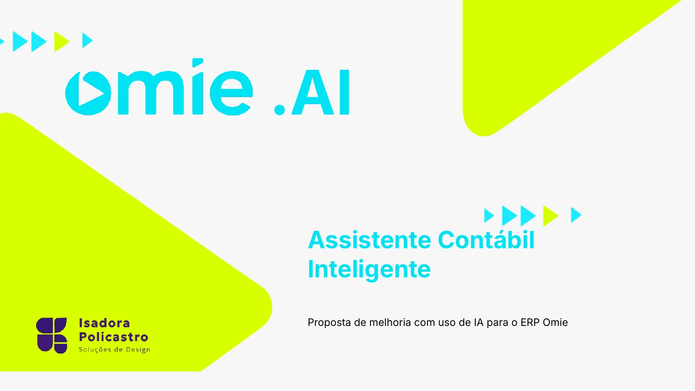
Contexto
Tarefas fiscais exigem conhecimento técnico.
O Omie é um ERP completo para pequenas e médias empresas, com vendas, financeiro, notas fiscais e integração contábil. Mas tarefas fiscais e financeiras exigem conhecimento técnico, o que gera erros e retrabalho para o usuário leigo.
Os critérios de sucesso: reduzir o tempo de emissão de notas, diminuir erros de preenchimento fiscal e aumentar o uso de funcionalidades automatizadas.
Processo
Do briefing ao protótipo
- 01
Jornada
Barreiras e atritos na experiência atual, do acesso aos módulos à análise de relatórios.
- 02
Benchmark
Conta Azul, QuickBooks, ZeroPaper e Bling como referências de mercado.
- 03
Persona
Dona de loja de alimentos naturais que quer emitir notas e controlar o financeiro com autonomia.
- 04
Solução
Preenchimento sugerido pelo histórico, leitura de PDFs, assistente conversacional e alertas no dashboard.
Conclusão
“O uso de IA torna tarefas complexas mais acessíveis.”
Pranchas
Da jornada às telas
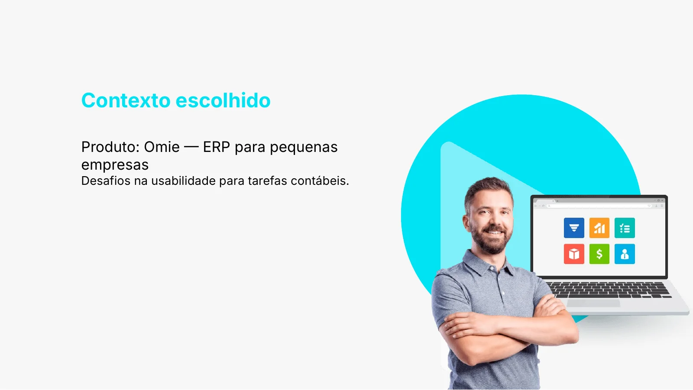
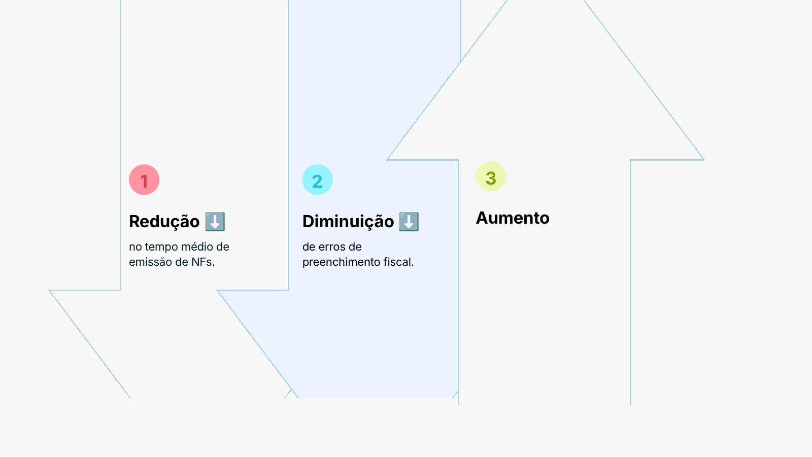
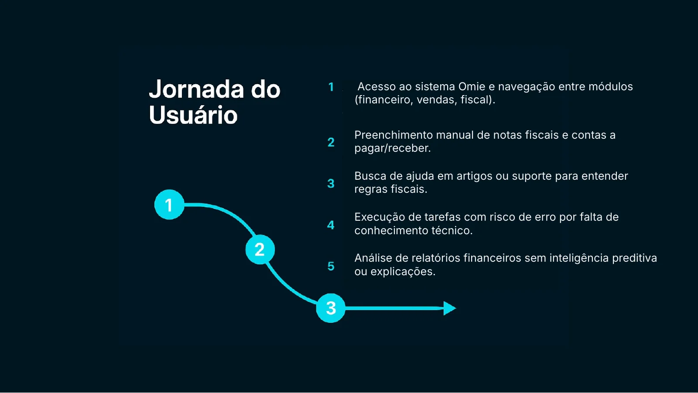
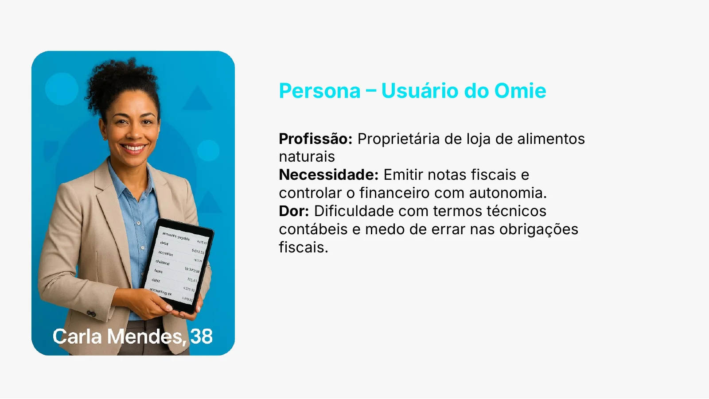
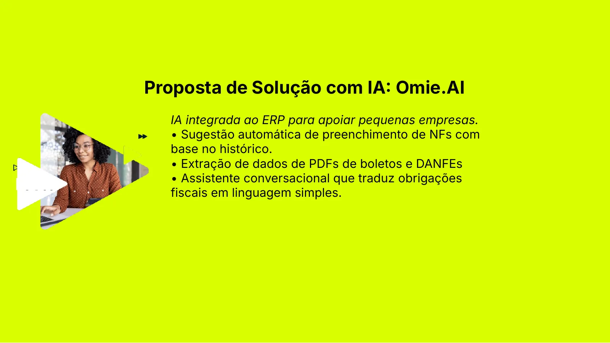
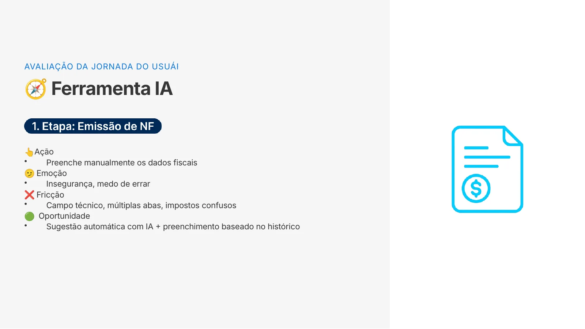
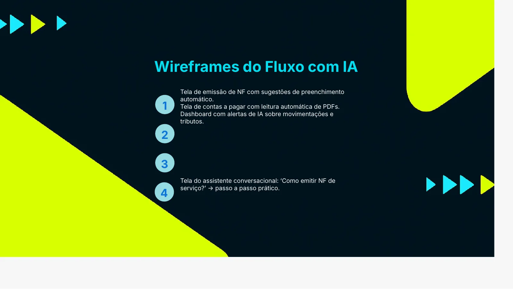
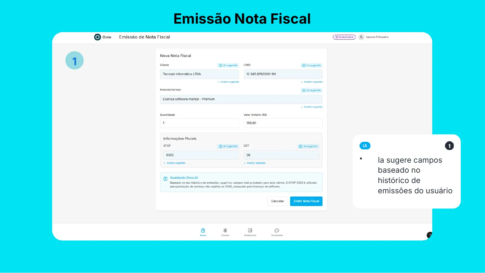
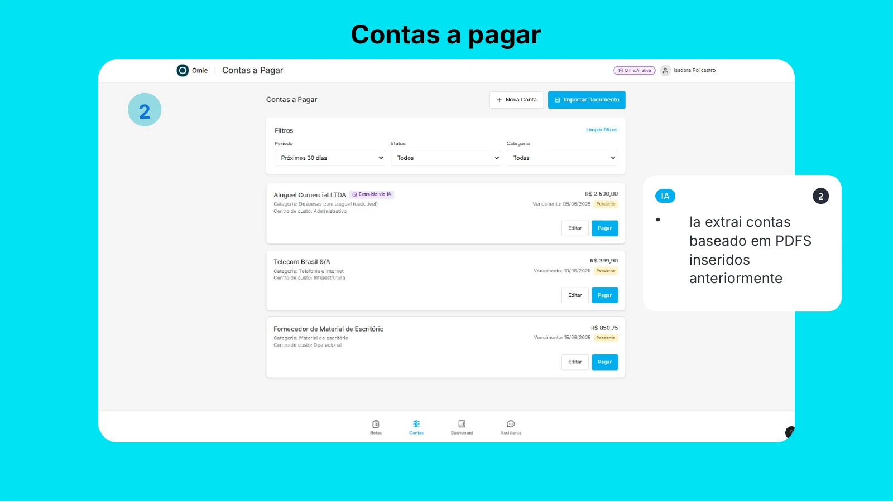
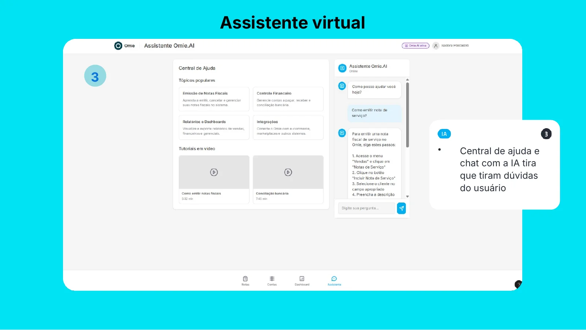
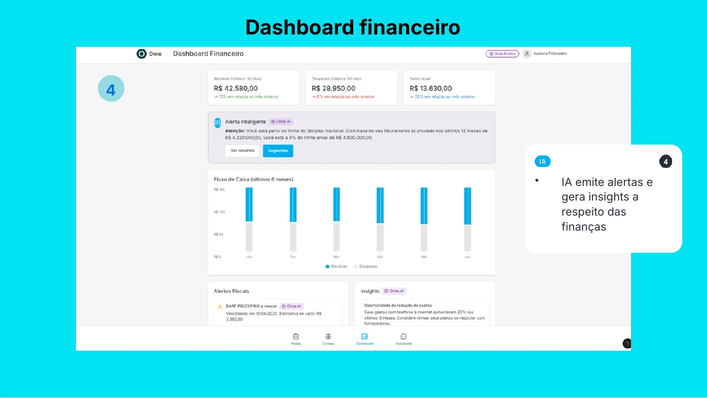
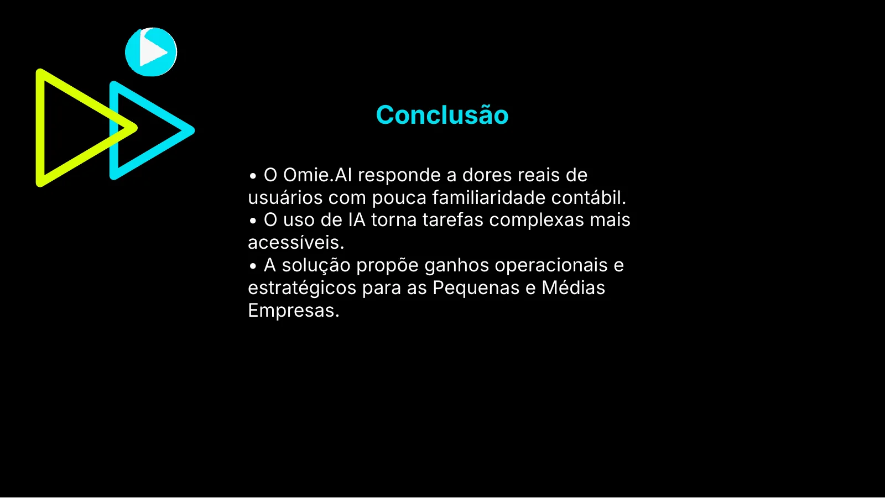
Entregas
Do diagnóstico ao protótipo
- Briefing
- Jornada do usuário
- Benchmark
- Persona
- Wireframes
- Protótipo
- IA aplicada
Quer um projeto assim para o seu negócio?
Vamos conversar sobre o seu projeto.